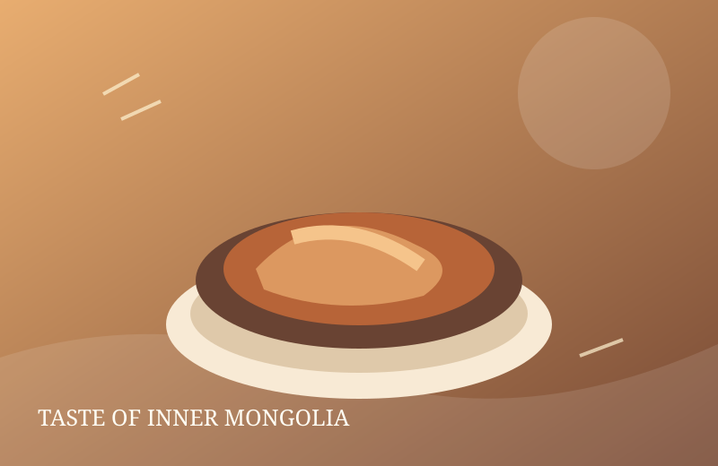
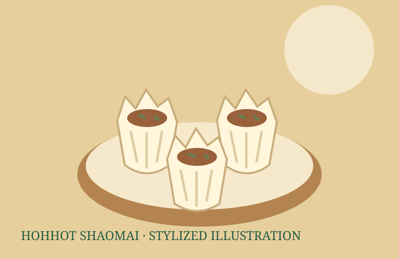
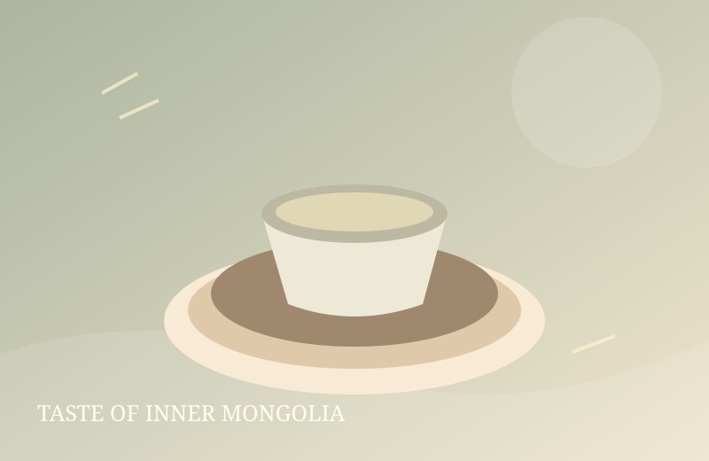

Meat · 手把肉
Shouba Rou
Bone-in lamb simmered simply and served in generous pieces.
Choose a category to filter the collection. Compare meat dishes, dairy foods, flour-based foods and drinks to find a place to start.
Showing 6 items.
Bone-in lamb simmered simply and served in generous pieces.

A festive dish associated with banquets and important gatherings.

An open-topped wheat wrapper with a seasoned meat filling.

Pressed or dried dairy foods with varied textures and flavors.

Tea brewed with milk; salted versions are common in many households.

Fermented dairy foods prepared in a range of local styles.
Try each category button. The visible cards and live count update together. Select “All foods” to reset the collection.